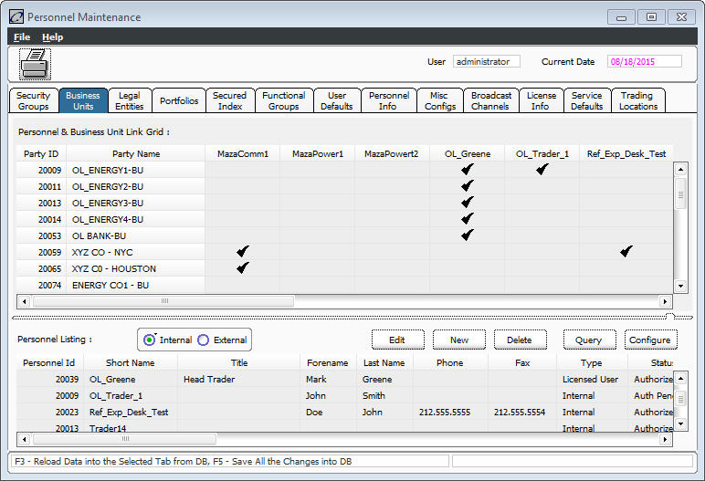
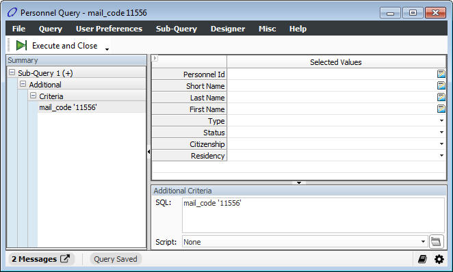
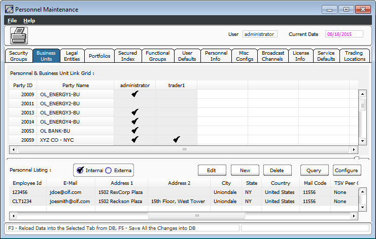

The Additional Criteria field of the Query Manager allows the user to enter additional structured query language (SQL) commands to extend the query. An Additional Criteria field is provided for each page within the Query Manager.
Any standard SQL expression supported by the underlying database platform can be used. The system adds the additional SQL at the end of the where clause. It goes directly to the database, with no additional massaging from the system.
The from clause of the query gets dynamically generated based on the information provided at the top of the query. The Additional Query Criteria is not looked at by the system in terms of it making a determination on which tables should go into the from clause. In other words, if you want to use the Additional Criteria functionality for Tran Info, you actually have to select something from the Tran Info page. The tricky part is manually selecting something that will not affect the query. For example, you may be able to pick a Tran Info that has two possible values: Yes and No, and manually select both (so that ab_tran_info gets into the from clause) and then use the Additional Criteria panel, located at the bottom of the window, to specify what you need for another Tran Info. Remember that all tran info is stored in the database as strings, so the query cannot look for numbers greater than 0 using where abc_tran_info > 0.
The original reasons for dynamically generating the from clause as needed is:
· Better performance
· There is a limit as to the number of joins that can be done in SQL
As a potential solution to the issue of not having a needed table in the from clause, you can try a "correlated subquery". For example, you could use something like this in the additional query where clause:
exists (select * from new_table where new_table.column=ab_tran.tran_num and new_table.value = 19)
The following is an illustration of an additional query criteria retrieving personnel information for a specific zip or mail code. Readers can generalize the example to apply to any place the Query Manager is used.
The Personnel Query does not provide the field nor table to define the query to retrieve personnel in a specific zip code. Normally, this can be filtered using the Filter Col option of the Column Header Menu available in the Personnel Listing window. But for illustration purposes, this example is used.
Open Launch Available Services.
In the Filter Service: field, enter personnel maintenance.
In the Available Services list, select Personnel Maintenance, and then click the Launch button. An empty Personnel Maintenance window and the Query Manager display.
Execute a blank query by clicking the Execute and Close or Execute buttons. The Personnel Maintenance screen displays users defined in the system.

The actual SQL command (in bold letters) being executed by the system displays in the Console (Olisten):
:SQL: select distinct personnel.id_number
value into #query_result_tmp from personnel where (1 = 1) and ( personnel.per
sonnel_type in (1,2) ) insert into query_result select value, 324797 from #quer
y_result_tmp where not exists (select * from query_result qr2 where qr2.unique_
id = 324797 and qr2.query_result = #query_result_tmp.value)
Note: This document is not intended to fully describe SQL or the above SQL statement. The above SQL statement is shown to compare it with the SQL statement generated by the system if the Query Manager has additional query criteria.
Open the Personnel Query window again.
Select User PreferencesàShow Additional Criteria Panel from the main menu. The Additional Criteria panel displays.
Click the Triangle button located at the bottom left corner of the screen. The Additional Criteria panel displays.
Enter the additional criteria in the text field as show in the figure below:

Only the personnel in the given zip code displays in the Personnel Maintenance window:

The following is the SQL code generated by the query with the additional query criteria in the Olisten:
SQL: select distinct personnel.id_number
value into #query_result_tmp from personnel where (1 = 1) and ( personnel.per
sonnel_type in (1,2) ) and (mail_code='11556') insert into query_result select
value, 324799 from #query_result_tmp where not exists (select * from query_result
qr2 where qr2.unique_id = 324799 and qr2.query_result = #query_result_tmp.value)
Note that the additional query criteria (in bold letters) were added at the end of the “where” clause.
Users can experiment with other possible Additional Query Criteria. Here are some examples that work:
Example |
Description |
personnel.mail_code = '11556' |
Same as the example shown above, but the name of the table is explicitly given |
personnel.mail_code = '11556' and personnel.state_id = 0 |
Personnel with a mail code of 11556, have no state assigned, and the name of the table is explicitly given. |